Dishes¶
All 35 Frontier Kitchen dishes by tier. Higher tiers heal more and add longer, stronger buffs. Trader dishes are bought as recipes from the Traveling Trader; they heal a little more and their buffs last 20% longer. How research and buffs work is on the Frontier Kitchen page.
Tier summary¶
| Tier | HP | Regeneration | Damage resistance | Deep breath | Perks | Trader dish HP | Trader recipe price |
|---|---|---|---|---|---|---|---|
| Classics | 48 | 1 for 15 s | - | - | 0 | - | - |
| Campfire | 60 | 1 for 30 s | - | - | 0 | 65 | 36 scrip |
| Homestead | 80 | 2 for 40 s | 15% for 3 min | - | 0 | 85 | 72 scrip |
| Expedition | 92 | 3 for 45 s | 25% for 5 min | 3 min | 1 | 97 | 80 scrip |
| Frontier Feast | 98 | 4 for 1 min 15 s | 35% for 8 min | 5 min | 2 | 103 | 192 scrip |
Regeneration power is HP healed per tick of the buff; see the Kitchen guide for details.
Classics¶
| Dish | Ingredients | Station | Time | HP |
|---|---|---|---|---|
| Baked Potato | 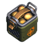 3× Potato |
Cookbot | 10 s | 48 |
| Baked Potato | 3× Potato | Campfire | 30 s | 48 |
| Corn on the Cob | 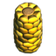 4× Corn |
Cookbot | 10 s | 48 |
| Corn on the Cob | 4× Corn | Campfire | 30 s | 48 |
| Grilled Fish | 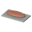 2× Fish Fillet |
Cookbot | 10 s | 48 |
| Grilled Fish | 2× Fish Fillet | Campfire | 30 s | 48 |
| Pizza Burger vanilla | 1× Woc Steak 5× Tomato 10× Potato |
Cookbot | 10 s | vanilla |
| Veggie Burger vanilla | 4× Carrot 2× Tomato 10× Potato |
Cookbot | 10 s | vanilla |
| Revival Baguette vanilla | 1× Woc Steak 3× Carrot 3× Tomato 3× Redbeet |
Cookbot | 1 min | vanilla |
The game's own Cookbot dishes (marked vanilla) sit in the Classics row and count towards Classics mastery, but heal their usual amount and give no Frontier buffs.
Campfire¶
| Dish | Ingredients | Station | Time | HP |
|---|---|---|---|---|
| Tomato Soup | 4× Tomato 2× Potato 1× Water |
Cookbot | 20 s | 60 |
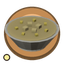 Corn Chowder |
5× Corn 2× Potato 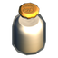 1× Milk |
Cookbot | 20 s | 60 |
| Mashed Potatoes | 6× Potato 1× Milk |
Cookbot | 20 s | 60 |
| Carrot Soup | 3× Carrot 2× Potato 1× Water |
Cookbot | 20 s | 60 |
| Cornbread | 6× Corn 1× Water 1× Milk |
Cookbot | 20 s | 60 |
| Milk Tea | 2× Flower Tea 1× Milk 2× Corn |
Cookbot | 20 s | 60 |
| Trail Hash Trader | 3× Potato 2× Carrot 2× Corn |
Cookbot | 20 s | 65 |
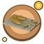 Fish & Chips Trader |
2× Fish Fillet 3× Potato |
Cookbot | 20 s | 65 |
Homestead¶
| Dish | Ingredients | Station | Time | HP |
|---|---|---|---|---|
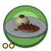 Steak & Mash |
1× Woc Steak 4× Potato 1× Milk |
Cookbot | 30 s | 80 |
| Berry Pancakes | 4× Blueberry 2× Milk 2× Corn |
Cookbot | 30 s | 80 |
| Banana Bread | 3× Banana 3× Corn 1× Milk |
Cookbot | 30 s | 80 |
| Root Stew | 3× Redbeet 3× Carrot 2× Potato 1× Water |
Cookbot | 30 s | 80 |
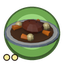 Pot Roast |
1× Woc Steak 3× Carrot 2× Tomato 1× Water |
Cookbot | 30 s | 80 |
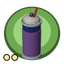 Berry Banana Shake |
3× Blueberry 2× Banana 2× Milk |
Cookbot | 30 s | 80 |
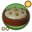 Shepherd's Pie Trader |
1× Woc Steak 4× Potato 2× Carrot 1× Milk |
Cookbot | 30 s | 85 |
| Borscht Trader | 3× Redbeet 2× Carrot 1× Tomato 2× Potato 1× Water |
Cookbot | 30 s | 85 |
| Berry Cobbler Trader | 4× Blueberry 3× Corn 1× Milk |
Cookbot | 30 s | 85 |
Expedition¶
| Dish | Ingredients | Station | Time | HP |
|---|---|---|---|---|
| Five-Alarm Chili | 2× Chili 1× Woc Steak 3× Tomato 1× Water |
Cookbot | 45 s | 92 |
| Tropical Smoothie | 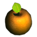 3× Orange3× Banana 1× Milk |
Cookbot | 45 s | 92 |
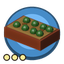 Broccoli Gratin |
1× Broccoli 4× Potato 2× Corn 2× Milk |
Cookbot | 45 s | 92 |
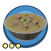 Fish Chowder |
2× Fish Fillet 1× Chili 2× Potato 1× Milk |
Cookbot | 45 s | 92 |
| Smoked Pike | 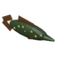 1× Ironjaw Pike3× Potato 2× Carrot |
Cookbot | 45 s | 92 |
| Moonfin Curry Trader | 1× Moonfin 1× Chili 2× Tomato 2× Potato |
Cookbot | 45 s | 97 |
| Smoked Eel Rolls Trader | 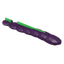 1× Sludge Eel1× Chili 2× Corn 2× Carrot |
Cookbot | 45 s | 97 |
| Orange-Glazed Steak Trader | 1× Woc Steak 2× Orange 1× Chili |
Cookbot | 45 s | 97 |
Frontier Feast¶
| Dish | Ingredients | Station | Time | HP |
|---|---|---|---|---|
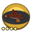 Ember-Seared Steak |
2× Woc Steak 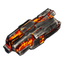 1× Ember2× Chili 1× Orange |
Cookbot | 1 min | 98 |
| Glow Risotto | 2× Glow 1× Broccoli 4× Corn 2× Potato 1× Milk |
Cookbot | 1 min | 98 |
| Crystal Parfait | 1× Crystalium 3× Blueberry 2× Orange 2× Milk |
Cookbot | 1 min | 98 |
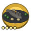 Sturgeon Feast |
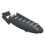 1× Frontier Sturgeon1× Broccoli 4× Potato 3× Corn 2× Milk |
Cookbot | 1 min | 98 |
| Leviathan Steak Trader | 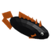 1× Crude Leviathan1× Ember 4× Potato |
Cookbot | 1 min | 103 |
| Ember Tarts Trader | 1× Ember 3× Banana 2× Blueberry 1× Milk |
Cookbot | 1 min | 103 |
| Crystal Sorbet Trader | 1× Crystalium 2× Orange 3× Blueberry 2× Milk 1× Ember |
Cookbot | 1 min | 103 |